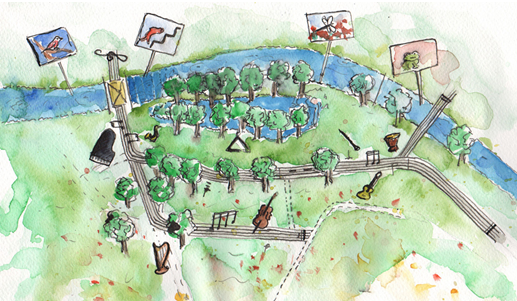

| 13.00 - 18.00 | Volop muzikaal vermaak voor kinderen (4-12 jaar) in de muziektuin. Met een mooi geïllustreerde plattegrond in de hand vinden zij feilloos de weg naar leuke spellen en opdrachten, die begeleid worden door musici, acteurs en kunstenaars. Wil je even in de huid kruipen van de zandtovenaar, de verwarde vissen in de Dommel helpen door de juiste toonladder neer te leggen, zelf een liedje of rap maken, muziekmemory in de bomen spelen of onder de instrumentenboom doorlopen? Kom gezellig meedoen en beleef een leuke middag! |
|  | |
| Optredens in de Kindermuziektuin: | |
| 13.30 | De koning is (mu)ziek, door CKE |
| 14.30 | Scratchkoor (NSK) |
| 14.45 | Jong Trombone Collectief o.l.v. Mark Boonstra |
| 15.15 | Dan Senn's Int. Space Band |
| 15.30 | Jong talentklas CKE |
| 16.00 | De koning is (mu)ziek door CKE |
| 17.00 | Jong talentklas CKE |